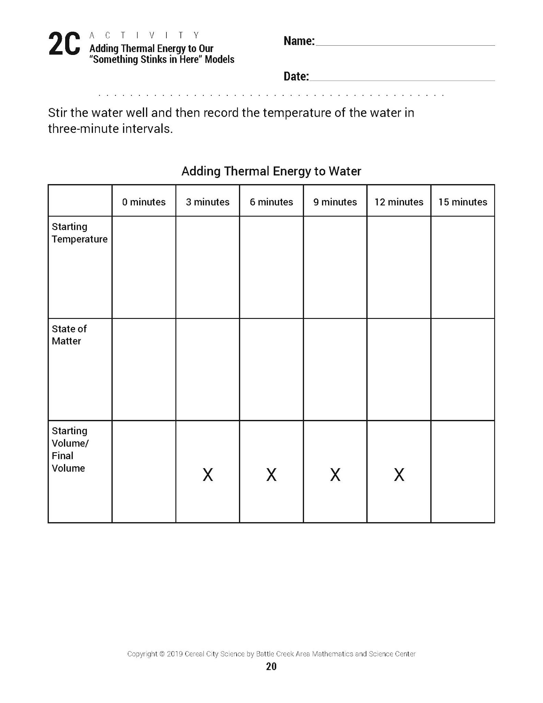
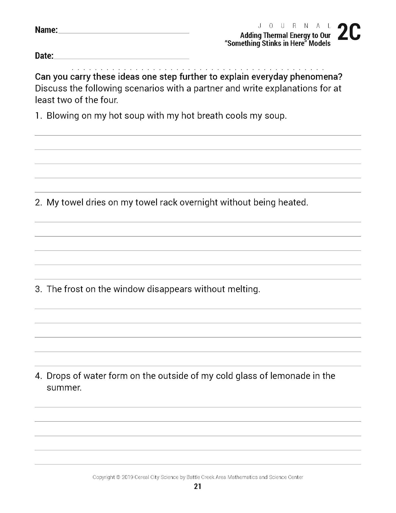

Stir the water well and then record the temperature of the water in three-minute intervals.
| 0 minutes | 3 minutes | 6 minutes | 9 minutes | 12 minutes | 15 minutes | |
|---|---|---|---|---|---|---|
| Starting Temperature | ||||||
| State of Matter | ||||||
| Starting Volume / Final Volume | X | X | X | X |
Student journal pages 20–21 • Select a page below to read its editable text.
Stir the water well and then record the temperature of the water in three-minute intervals.
| 0 minutes | 3 minutes | 6 minutes | 9 minutes | 12 minutes | 15 minutes | |
|---|---|---|---|---|---|---|
| Starting Temperature | ||||||
| State of Matter | ||||||
| Starting Volume / Final Volume | X | X | X | X |
This is the unmarked scanned page for checking original diagrams, exact wording, or layout. The editable HTML content is above.

Can you carry these ideas one step further to explain everyday phenomena? Discuss the following scenarios with a partner and write explanations for at least two of the four.
1. Blowing on my hot soup with my hot breath cools my soup.
2. My towel dries on my towel rack overnight without being heated.
3. The frost on the window disappears without melting.
4. Drops of water form on the outside of my cold glass of lemonade in the summer.
This is the unmarked scanned page for checking original diagrams, exact wording, or layout. The editable HTML content is above.
